Valve Clearance: Adjustments
VALVE ADJUSTMENT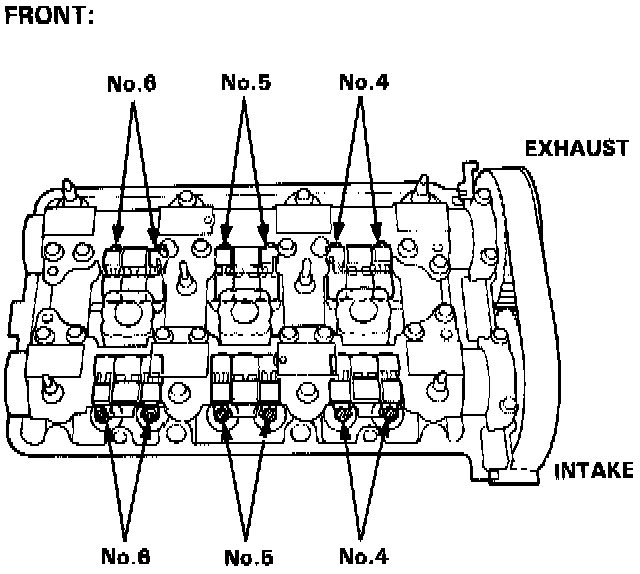
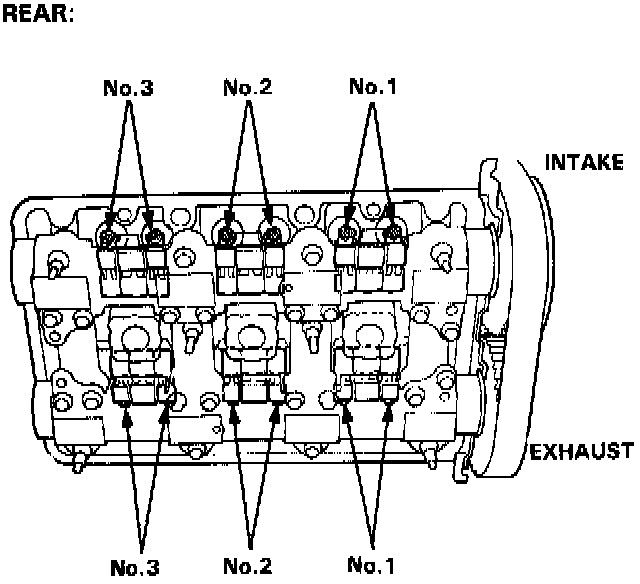
CLEARANCE:
Intake: 0.15 - 0.19 mm (0.006 - 0.007 in)
Exhaust: 0.17 - 0.21 mm (0.007 - 0.008 in)
NOTE:
- Valves should be adjusted cold, when the cylinder head temperature is less than 100°F (38°C).
- Adjustment is the same for both intake and exhaust valves.
- Adjust valve clearance at TDC of each cylinder.
- Do not rotate the engine counterclockwise. The timing belt could jump a tooth on the camshaft pulleys.
1. Remove the cylinder head covers.
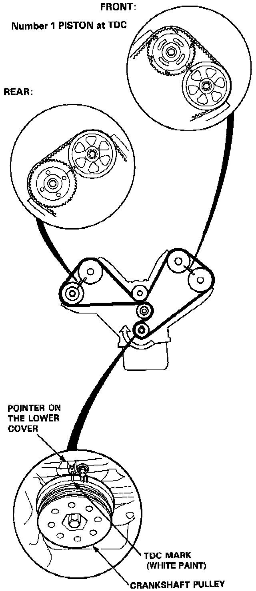
2. Rotate the crankshaft to set No.1 piston at TDC.
TDC mark (white paint) on the crankshaft pulley should align with pointer on the timing lower cover, and TDC grooves on the camshaft pulleys should align with timing belt cover plates.
3. Manually inspect the rocker arms for independent operation.
4. Adjust valves on No.1 cylinder.
Adjusting screws are on primary and secondary rocker arms.
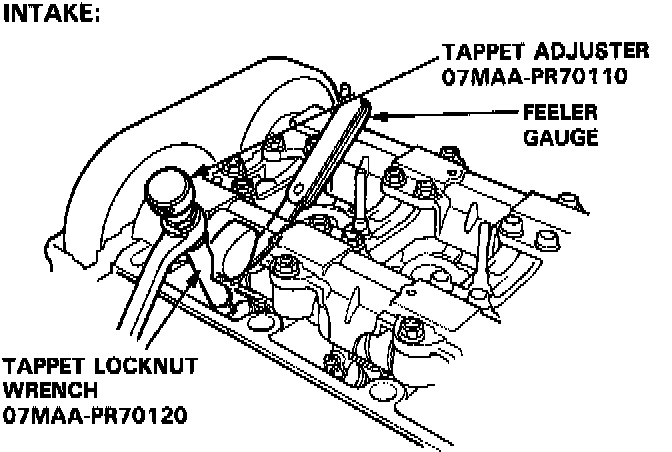
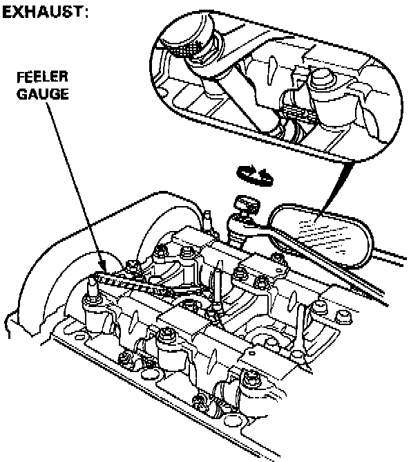
NOTE: Use a mirror to check if the special tool is positioned on the locknut correctly.
5. Loosen the locknut, and turn the adjustment screw until the feeler gauge slides back and forth with a slight amount of drag.
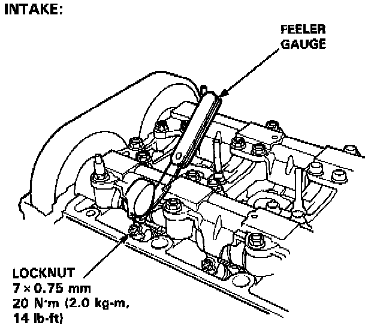
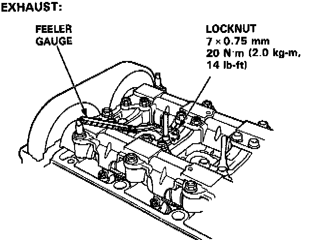
6. Tighten the locknut and check the clearance again.
Repeat adjustment if necessary.
Number 4 piston at TDC:
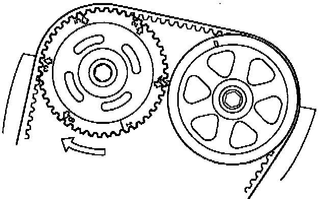
7. Rotate the crankshaft 120° clockwise (camshaft pulley turns 60°). Check that the front intake camshaft pulley is positioned as shown.
Repeat step 3 to step 6 for No. 4 cylinder.
Number 2 piston at TDC:
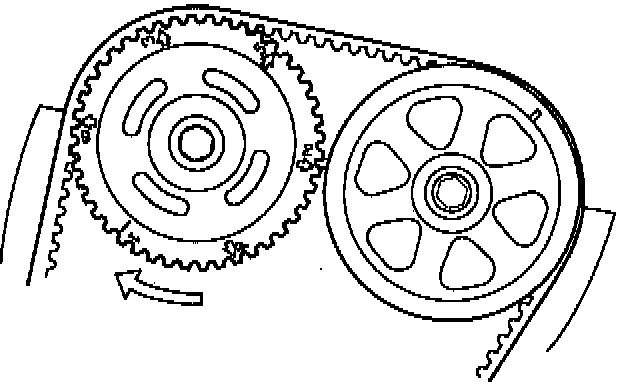
8. Rotate the crankshaft 120° clockwise (camshaft pulley turns 60°). Check that the front intake camshaft pulley is positioned as shown.
Repeat step 3 to step 6 for No. 2 cylinder.
Number 5 piston at TDC:
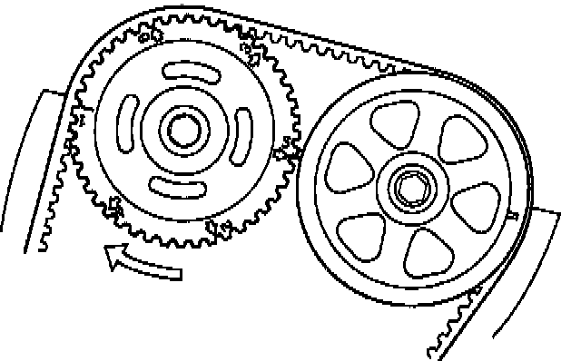
9. Rotate the crankshaft 120° clockwise (camshaft pulley turns 60°). Check that the front intake camshaft pulley is positioned as shown.
Repeat step 3 to step 6 for No. 5 cylinder.
Number 3 piston at TDC:
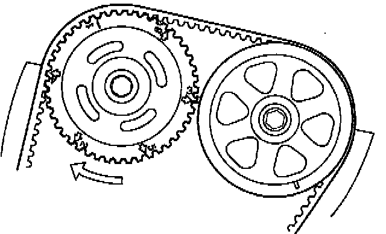
10. Rotate the crankshaft 120° clockwise (camshaft pulley turns 60°). Check that the front intake camshaft pulley is positioned as shown.
Repeat step 3 to step 6 for No. 3 cylinder.
Number 6 piston at TDC:
11. Rotate the crankshaft 120° clockwise (camshaft pulley turns 60°). Check that the front intake camshaft pulley is positioned as shown.
Repeat step 3 to step 6 for No. 6 cylinder.